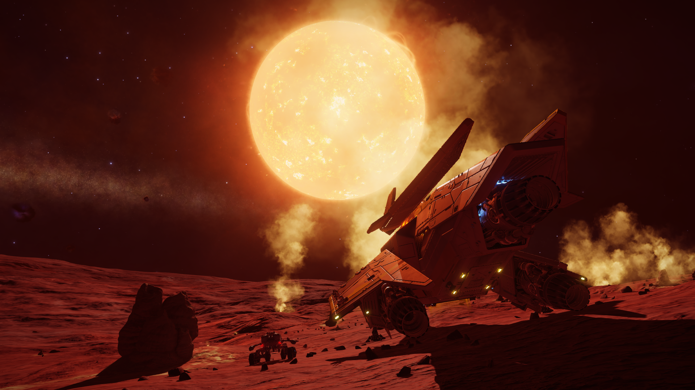

ever since i bought my pc i really wanted to get a vr headset. Unfortunately, having spent all my money on the pc, i did not have the money to buy one yet. luckily i knew someone who had one of the origonal rifts and offered to lend it to me for a while. along with that he reccomended a game to me called Elite Dangerous.

This is probaly one of the games i have been consistantly playing for the longest period of time. it was the idea of having a ship that i could go anyware in our galyxy in, so long as i had the right equipment. it was also the ability to own and fly your own ship. it wasnt like all the other games like no mans sky (which i warmed to later on) that would manage everything. you could manage all your individual modues, change them out or even turn them off and have to suffer the repocusions. it didnt feel like your imputs where being interpreted to what the game allowed, it felt as complicated as flying a spaceship should feel in the future.
"On a monitor, Elite Dangerous is one of the most immersive, beutifull games out there.
but in VR, you're flying a f*****g spaceship"
-CMDR Exigeous
in my option, vr is what makesthis game. Never have i seen a vr port into a game work smooth. Due to its simplisity i would argue that this is one of the most imersive. it feels like your there. theres nothing like seeing that sun appear in fron of you, or to see the true scale of the ship your barrel-rolling round in order to avoid its misiles. nothing i can say does this enough justice. the thing that gets the closesed in my opinion is the quote above.
something in most space games that isnt everyones cup of tea is exploration. although in comparison to modern games it starts to fall apart, when this game was in its golden era, it was incredibaly impresive. the elite dangerous world is a 1:1 scale model of our galaxy. they ploted all of the currently known stars in the galixy and then filled in the rest of the galxy with pricedurely generated systems based on the star decities in real life of that area. this left us with a galyxy 40 billion systems strong, waiting for the community to explore. t this doy, less than 5% have been visited by players. i found enjoyment in going on long haul trips visiting important lore locations and real life points of intrest. for example, str A*, the black hole that holds everything together. i found this sence of exploration very satisfying as it felt how traviligh that distance should have felt. the trip to str A* took me arround 16 hours if i remember correctly. i was playing arround with streaming at the time, and you get to see my reaction because of this
unfortunately, all good things must at least come to a brief end. unfortunately i joined the game at the end of what i would call the golden era. the game was relatavly popular and worked very well. the game developers decided it would be a good time to give the game a much needed make over. at first this seemed gret, the graphics looked insane and we could now walk on planets. but on releace day we found out how much this tore the game appart. the full game upgrade that everybody payed £30 for turned out to barely work, it felt more like an alpha releace. not long afterwards, they announced that VR support was being removed. i could go on for hours about all the mistakes they made. it had even got to the point that the base game was becoming unplayable due to the neglect. some would even argue that it had even become more unplayable than the buggyest of space games. Enter star citien...